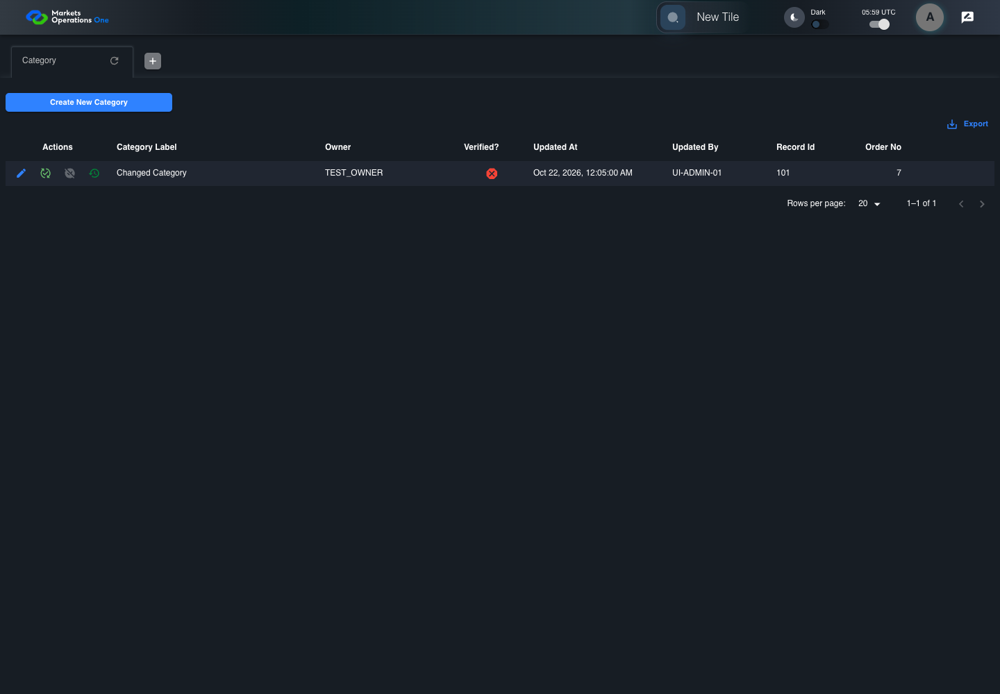

UI-ADM-CAT-005 actual administration UI with step evidence
PASS · application/run-050/ui-adm-cat-005-actual-administration-ui-with-step-evidence-d6bf568f3457-attempt-1 · ACTUAL_APPLICATION_LOCAL_SERVICES
Actual current React administration screens. Controlled browser login supplies UI-ADMIN-01 and TEST_OWNER, or the declared SUPER_USER. Controlled BFF routes return the case-declared records. Other controlled saves persist submitted field values. This run establishes frontend handling only. It does not execute BFF validation, storage, audit generation, or authorization.
2026-10-22T05:59:00.099Z to 2026-10-22T05:59:04.411Z
Assertions and result · Artifact manifest · Exact run inputs and source hashes
Result SHA-256:ea4e69761879068d17244b094a2f25d4ff0cad81d130a0e75a5b9d905d082d9aMachine observations
- ui-origin-admin-requests.json
4e0f44f3b43e436fdb311fa9d65b0179cf3fc010c6ab2051b1c6793ab3c90633
Screenshot capture: CAPTURED. Named frames: 10.
Step screenshot bindings: COMPLETE. 9/9 canonical steps have execution screenshots.
Bindings measure structural coverage only. They do not establish screenshot content quality or relevance.
Screenshot content review: NOT_REVIEWED. Recorded context: 0/10 frames. Identical image bytes: 4 repeated frames. Recorded context does not establish human visual review.
Canonical step timeline
Given Admin A is authenticated as fixture UI-ADMIN-01 with the case-specific permissions
Execution: PASSED.
1. step-01 Visible state after step 1: Given Admin A is authenticated as fixture UI-ADMIN-01 with the case-specific permissions
2026-10-22T05:59:01.089Z · 1440×1000
Step: /Users/lushevol/code/github/ratan-release-impact/workbench/tasks/ui-test-coverage-20261022/test-cases.md:7803
SHA-256:be85fc0eb4cfbd70a2159640a8789a93e8c37b2baceb6f51c245ede93eba2be5And the Category admin screen is open for UI-ADMIN-01; fixture record 101 is inactive and has Category Label Fixture Category; its owner is TEST_OWNER; the update response returns record 101 with Category Label Changed Category
Execution: PASSED.
2. step-02 Visible state after step 2: And the Category admin screen is open for UI-ADMIN-01; fixture record 101 is inactive and has Category Label Fixture Category; its owner is TEST_OWNER; the update response returns record 101 with Category Label Changed Category
2026-10-22T05:59:01.961Z · 1440×1000
Step: /Users/lushevol/code/github/ratan-release-impact/workbench/tasks/ui-test-coverage-20261022/test-cases.md:7804
SHA-256:10f05a3621edb44e73914974b279c5d7bcf0c97d74865b976fa4d2e395f3fef2When Admin A clicks icon button named "Edit" inside row with Record Id "101" in the "Category" administration data grid
Execution: PASSED.
3. step-03 Visible state after step 3: When Admin A clicks icon button named "Edit" inside row with Record Id "101" in the "Category" administration data grid
2026-10-22T05:59:02.206Z · 1440×1000
Step: /Users/lushevol/code/github/ratan-release-impact/workbench/tasks/ui-test-coverage-20261022/test-cases.md:7805
SHA-256:f8cab628fb5105e13f3923077059ad04a1d23525411c8cd9ab2a71b2d342ce1bAnd Admin A replaces the value of textbox named "Category Label" inside the dialog named "edit ID: 101" inside the "Category" administration tabpanel with "Changed Category"
Execution: PASSED.4. step-04 Visible state after step 4: And Admin A replaces the value of textbox named "Category Label" inside the dialog named "edit ID: 101" inside the "Category" administration tabpanel with "Changed Category"
2026-10-22T05:59:02.287Z · 1440×1000
Step: /Users/lushevol/code/github/ratan-release-impact/workbench/tasks/ui-test-coverage-20261022/test-cases.md:7806
SHA-256:739ba8c901947542cee6030bdc4e0c66ad66bb6a14a0a8d8b0a87ddc018c3ad7And the declared controlled field clock advances by 300 milliseconds
Execution: PASSED.5. step-05 Visible state after step 5: And the declared controlled field clock advances by 300 milliseconds
2026-10-22T05:59:02.594Z · 1440×1000
Step: /Users/lushevol/code/github/ratan-release-impact/workbench/tasks/ui-test-coverage-20261022/test-cases.md:7807
SHA-256:b9c96d8153f3d2825e2303cfcbae11f2ee476697f3b391e239e2685b7badeaccAnd Admin A clicks button named "Update" inside the dialog named "edit ID: 101" inside the "Category" administration tabpanel
Execution: PASSED.
6. step-06 Visible state after step 6: And Admin A clicks button named "Update" inside the dialog named "edit ID: 101" inside the "Category" administration tabpanel
2026-10-22T05:59:02.772Z · 1440×1000
Step: /Users/lushevol/code/github/ratan-release-impact/workbench/tasks/ui-test-coverage-20261022/test-cases.md:7808
SHA-256:47196a251ad41c9fbbd2c7e08aff41c7f00beac9d25cc7c410269beab76d5d30Then cell named "Category Label" inside row with Record Id "101" in the "Category" administration data grid displays "Changed Category"
Execution: PASSED.
7. step-07 Visible state after step 7: Then cell named "Category Label" inside row with Record Id "101" in the "Category" administration data grid displays "Changed Category"
2026-10-22T05:59:02.972Z · 1440×1000
Step: /Users/lushevol/code/github/ratan-release-impact/workbench/tasks/ui-test-coverage-20261022/test-cases.md:7809
SHA-256:47196a251ad41c9fbbd2c7e08aff41c7f00beac9d25cc7c410269beab76d5d30Image bytes match frame 6. An unchanged image can be valid for consecutive assertions. This match does not establish correct step content.
And the data row count in data grid with source identity "administration records" inside the "Category" administration tabpanel equals its pre-action count
Execution: PASSED.
8. step-08 Visible state after step 8: And the data row count in data grid with source identity "administration records" inside the "Category" administration tabpanel equals its pre-action count
2026-10-22T05:59:03.196Z · 1440×1000
Step: /Users/lushevol/code/github/ratan-release-impact/workbench/tasks/ui-test-coverage-20261022/test-cases.md:7810
SHA-256:47196a251ad41c9fbbd2c7e08aff41c7f00beac9d25cc7c410269beab76d5d30Image bytes match frame 7. An unchanged image can be valid for consecutive assertions. This match does not establish correct step content.
And dialog named "edit ID: 101" inside the "Category" administration tabpanel is absent
Execution: PASSED.
9. step-09 Visible state after step 9: And dialog named "edit ID: 101" inside the "Category" administration tabpanel is absent
2026-10-22T05:59:03.340Z · 1440×1000
Step: /Users/lushevol/code/github/ratan-release-impact/workbench/tasks/ui-test-coverage-20261022/test-cases.md:7811
SHA-256:47196a251ad41c9fbbd2c7e08aff41c7f00beac9d25cc7c410269beab76d5d30Image bytes match frame 8. An unchanged image can be valid for consecutive assertions. This match does not establish correct step content.
Additional named frames

The final visible state after the named test assertions.
2026-10-22T05:59:03.532Z · 1440×1000Step: Test source: /Users/lushevol/code/github/ratan-release-impact/workbench/e2e/audit-specs/admin-expanded.spec.ts:15
SHA-256:
47196a251ad41c9fbbd2c7e08aff41c7f00beac9d25cc7c410269beab76d5d30Image bytes match frame 9. An unchanged image can be valid for consecutive assertions. This match does not establish correct step content.
Screenshots establish visible state only. Assertions and traces support functional claims.